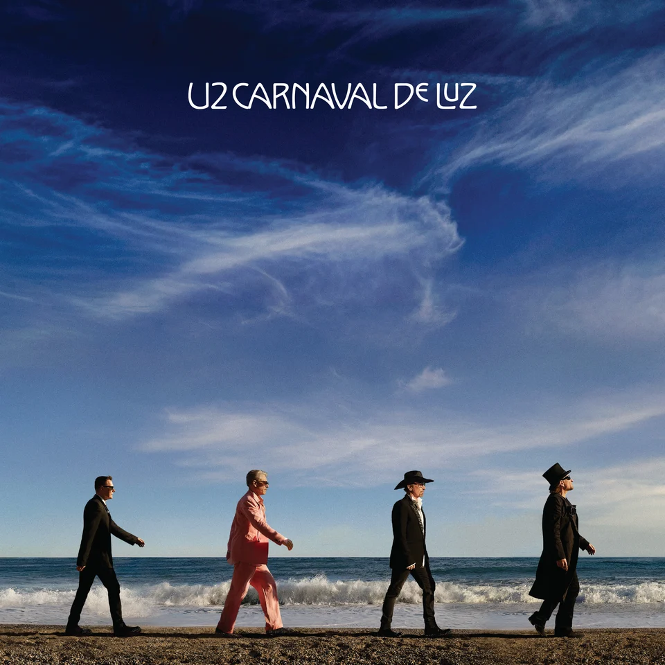
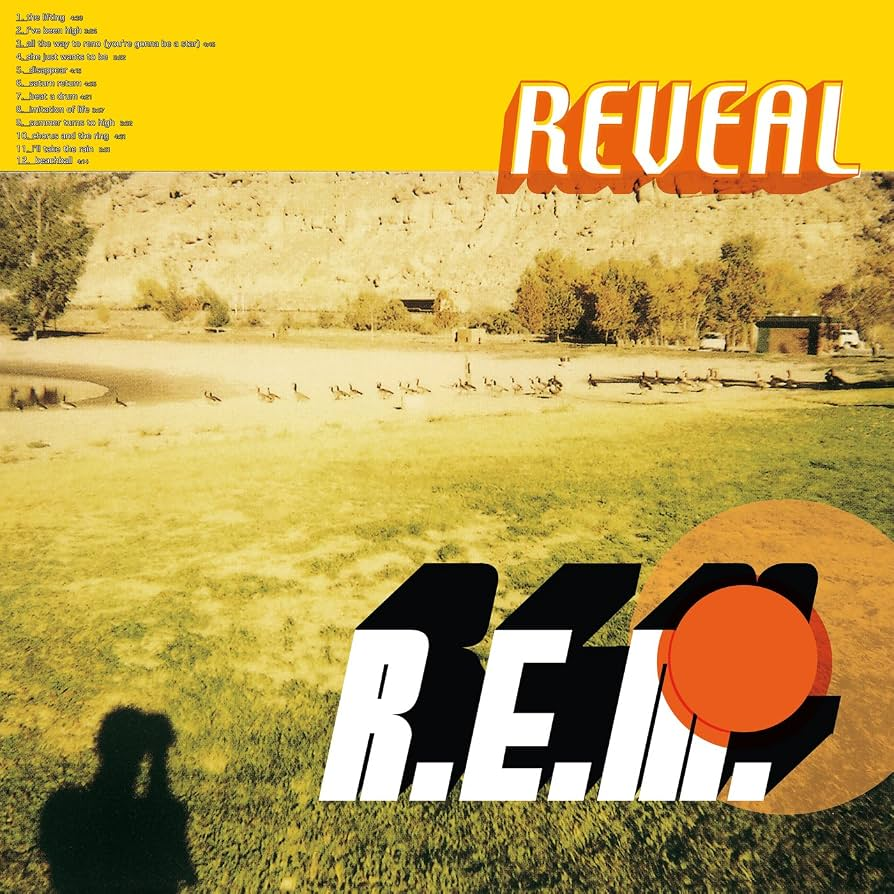

Noticias

Neil Young, publica su quincuagésimo album en solitario, titulado "Second Song"
Una reflexión otoñal y emocional sobre la memoria, el paso del tiempo y el amor a los 80 años de edad.
El album contiene 7 canciones intimas y acusticas que suman unos 42 minutos, con un par de temas rescatados de los años 60. Fue realizado en el estudio Shangri-La de Malibú, producido junto a Lou Adler y Niko Bolas, y acompañado por The Chrome Hearts.

U2 anuncia la llegada de su primer disco en casi una decada, "Carnaval de Luz", previsto para noviembre de 2026
"Silencio", la nueva canción de U2
El anuncio de "Carnaval de Luz" llegó acompañado de "Silencio", una canción de 2 min y 35 seg que ya está disponible en plataformas digitales y cuenta con un videoclip.De acuerdo con U2 el tema tiene elementos asociados al surf-punk de los primeros años de la banda y cuenta con producción adicional de Ryan Tedder. El videomusical fue dirigido por el duo mexicano-estadounidense Cliqua y grabado en Ciudad de México.

En 2026, la mitica banda chilena Los Prisioneros destaca por la celebración de los 40 años del album "Pateando Piedras" y diversas actividades lideradas por el baterista Miguel Tapia
Principales noticias del evento de 2026
En Perú, se anunció que Miguel Tapia celebrará los 40 años del disco con un concierto en Lima programado para el 7 de diciembre de 2026.

La banda R.E.M anunció el lanzamiento de una reedición especial por el 25 aniversario de su album "Reveal" y el exvocalista Mikel Stipe confirmó la salida de su esperado album debut como solista para finales de 2026
Noticias recientes de R.E.M.
Reedición de "Reveal", el grupo anunción una edición de lujo y en doble LP de su duodecimo album. Estudio lanzado originalmente en 2001, cuyo lanzamiento oficial está programado para el 20 de noviembre de 2026.